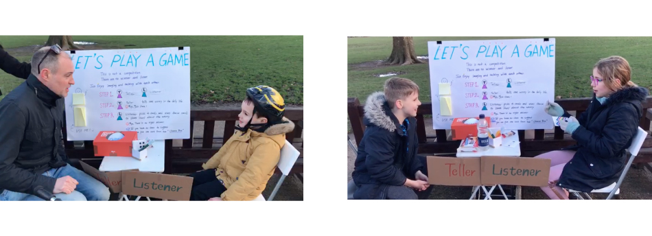
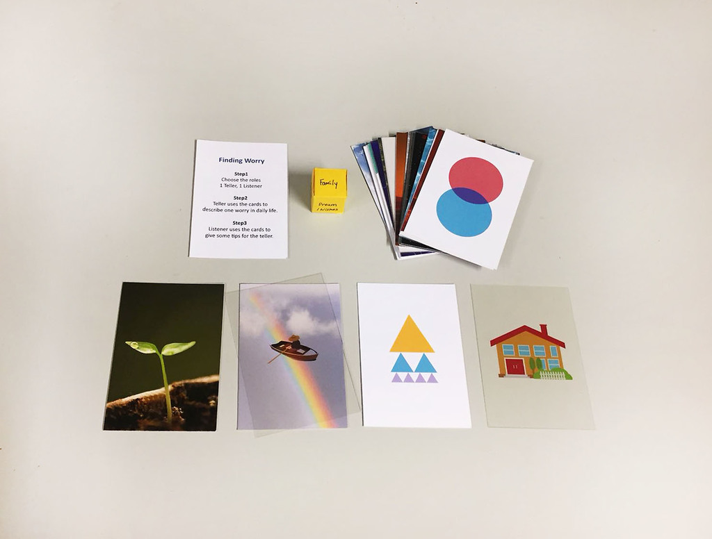

Inside Out
- Design Research
- Social Design
Challenge:
Nowadays, the people who experienced or struggle with the mental health still increases. However, in many cases, it is still many restrictions from the current clinical system or therapeutic programmes. For example, due to the stigma, some people avoid to find a clinical or therapeutic help. Also, some people repress the negative feelings without noticing themselves are doing it. So as a social and service designer, how can we respond to the situation?
Outcome:Inside Out Card Game and Rental System
The project is aimed to intervent the accumlated low mood by providing an accessible card game at park, encouraging people to talk about the negative emotions in a safe, relaxing atmosphere.
Insight Gathering
Field Research, Emotional Map, Interviews, Drawing activities
Concept:
Amplify the relaxing part of talking therapy and implement into everyday conversationTalking is regarded as a easy behaviour in everyday life. However, not every situation is easy to talk, especially talking about negative emotions. In contemporary society, being rational and thoughtful could be a barrier when talking about negative emotions. With this insight, we amplified the good part of talking therapy which is relaxing atmosphere and feel allowed to be not perfect. A card game that has different images is aimed to create a relaxing atmosphere and visualise the invisible emotions which can improve the understanding of conversation about emotions.
Card Game
Visualisation of invisible emotionsThe game visualises the invisible emotions by images of nature, everyday objects and abstract shapes in order to improve the understanding of emotions expressed. Also, it creates a time and a relaxing atmosphere for the topic that some people feel hard to deal with.

What we have found through the practice
- Some people use the cards to make their own stories if it is not easy to make them talk about how they actually feel at beginning.
- It is like a trigger to help people to realize what they are repressing mindlessly and start to talk about it.
'It softens the hardship of talking about concerns, I always felt hard to talk about my concerns. But the cards allows me to talk easily and also allows me to feel calmer when the listener gives me some tips by using the cards.'
'It is a trigger for me to rethink the unnoticed accumulated pressure. When I was playing it, I realised that how much pressure I have. And after I spoke them out, I felt relieved.
Purposed system
Inside Out Games as a rental service provided in a coffee shop at the park
As environment is a key factor that affects emotions, the nice nature is being proved that has a good impact on physical and mental health and make people open their minds. Hence, the conversation card game is placed in a coffee shop at Queen's Park.
Queen's Park